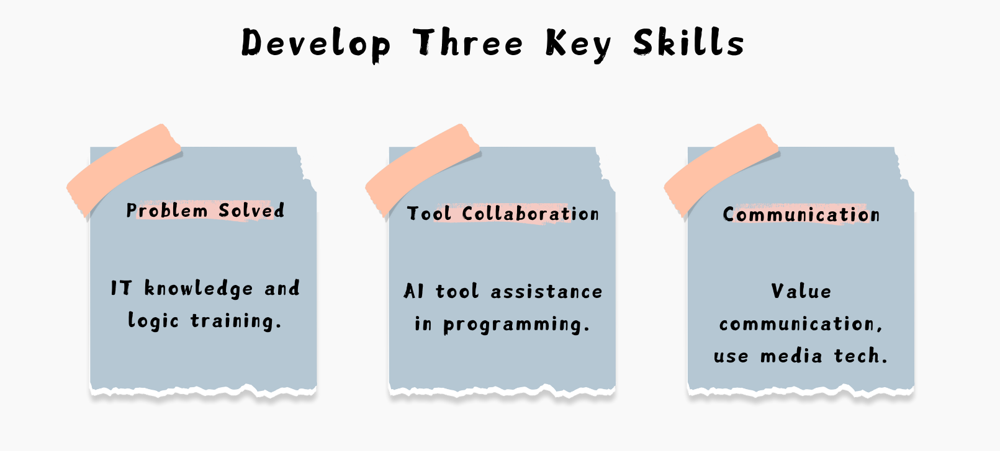

Concepts of AI Learning

Additional Courses
In response to generative AI, the Department of Information Management has strengthened its offerings with 15 related courses, including 1 required course for all students and 4 general education courses.
15 Related Courses
- Artificial Intelligence and Machine Learning
- Practical Artificial Intelligence
- Practical Deep Learning
- AI Application Mathematics
- Generative AI Application Development
- Computer Vision and AI Image Generation
- Intelligent Robotics Applications
- Speech Generation and Dialogue Applications
- AI Operations Platform
- Animation Software Creation Applications
- AI-Enabled Business Model Transformation and Innovation
- AI Marketing Technology and Digital Marketing
- Smart IoT
- Computer Graphics and 3D Image Generation
- Information Security and AI Applications
4 General Education Courses
- Introduction to Generative AI Applications
- Information Security and Artificial Intelligence
- OPEN AI Integration Applications
- AI Empowerment and Transformational Entrepreneurship
1 Required Course for All Students
- AI Applications and Programming Creation